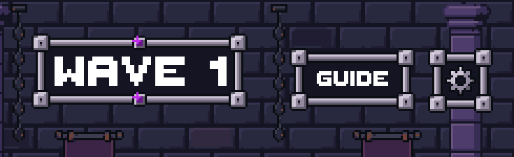
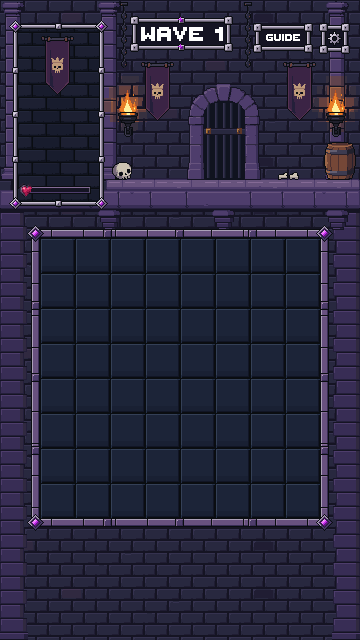
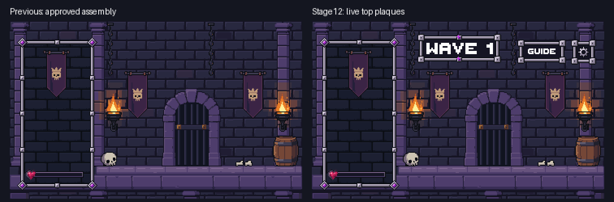
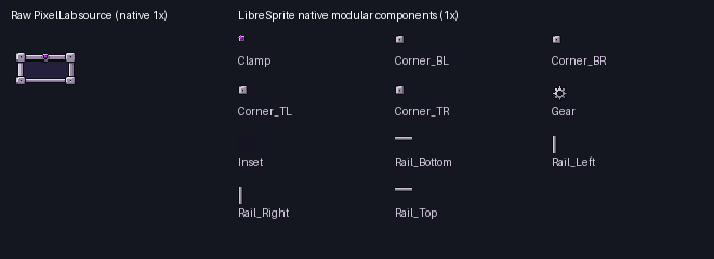

Eleven new native components from PixelLab and LibreSprite. Actual Unity captures with live Thaleah labels and a separate gear. The approved portrait, board and environment remain unchanged. Candidate for review; no production integration or merge.


Native, 2× and 3× renders match exactly.


Four 9×9 riveted corners; 16×5 / 5×16 rails; 7×7 violet socket; 16×16 dark inset; 15×15 gear. No baked lettering. One paid source, exactly five approved generations; balance 994.20.
Previous portrait review · Unity validator receipt
Stage12 complete. Stopped before Stage13.